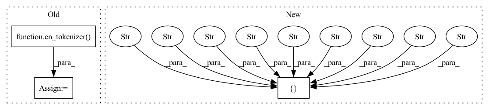

Pattern ID :40030
Before Change
// test sentence starts when two sentences are joined
text = "This is one sentence. This is another sentence."
heads = [0, -1, -2, -3, -4, 0, -1, -2, -3, -4]
tokens = en_tokenizer( text)
doc = get_doc(
tokens.vocab,
words=[t.text for t in tokens],
heads=heads,After Change
doc[0].head = doc2[0]
// test sentence starts when two sentences are joined
// fmt: off
words = ["This" , "is" , "one" , "sentence" , "." , "This" , "is" , "another", "sentence" , "." ]
heads = [0, 0, 0, 0, 0, 5, 5, 5, 5, 5]
// fmt: on
doc = Doc(en_vocab, words=words, heads=heads, deps=["dep"] * len(heads))In pattern: SUPERPATTERN
Frequency: 3
Non-data size: 3
Instances Fragment ID: 113847423
Project Name: explosion/spaCy
Commit Name: 67fbcb3da57c9830be34bf56518d8ec659ed65b6
Time: 2020-09-21
Author: ines@ines.io
File Name: spacy/tests/doc/test_token_api.py
M Class Name: AnonimousClass
N Class Name: AnonimousClass
M Method Name: test_doc_token_api_head_setter(1)
N Method Name: test_doc_token_api_head_setter(1)
M Parent Class:
N Parent Class:
M File Name: spacy/tests/doc/test_token_api.py
N File Name: spacy/tests/doc/test_token_api.py
M Start Line: 115
M End Line: 177
N Start Line: 106
N End Line: 156
Before Change
pos = ["PROPN", "PUNCT", "DET", "NOUN", "PUNCT", "VERB", "ADP", "DET", "NOUN", "PUNCT"]
deps = ["nsubj", "punct", "poss", "appos", "punct", "ROOT", "prep", "det", "pobj", "punct"]
// fmt: on
tokens = en_tokenizer( text)
doc = get_doc(
tokens.vocab, words=[t.text for t in tokens], pos=pos, deps=deps, heads=heads
)
chunks = list(doc.noun_chunks)After Change
def test_en_parser_noun_chunks_appositional_modifiers(en_vocab):
// fmt: off
words = [ "Sam", "," , "my" , "brother" , "," , "arrived" , "to" , "the" , "house" , "." ]
heads = [5, 0, 3, 0, 0, 5, 5, 8, 6, 5]
pos = ["PROPN", "PUNCT", "DET", "NOUN", "PUNCT", "VERB", "ADP", "DET", "NOUN", "PUNCT"]
deps = ["nsubj", "punct", "poss", "appos", "punct", "ROOT", "prep", "det", "pobj", "punct"] Fragment ID: 113847427
Project Name: explosion/spaCy
Commit Name: 67fbcb3da57c9830be34bf56518d8ec659ed65b6
Time: 2020-09-21
Author: ines@ines.io
File Name: spacy/tests/lang/en/test_parser.py
M Class Name: AnonimousClass
N Class Name: AnonimousClass
M Method Name: test_en_parser_noun_chunks_appositional_modifiers(1)
N Method Name: test_en_parser_noun_chunks_appositional_modifiers(1)
M Parent Class:
N Parent Class:
M File Name: spacy/tests/lang/en/test_parser.py
N File Name: spacy/tests/lang/en/test_parser.py
M Start Line: 52
M End Line: 59
N Start Line: 43
N End Line: 48
Before Change
text = "This is \t a \t\n \n sentence . \n\n \n"
heads = [1, 0, -1, 2, -1, -4, -5, -1]
transition = ["L-nsubj", "S", "L-det", "R-attr", "D", "R-punct"]
tokens = en_tokenizer( text)
doc = get_doc(tokens.vocab, words=text.split(" "), heads=heads)
assert doc[2].is_space
assert doc[4].is_space
assert doc[5].is_spaceAfter Change
reason="The step_through API was removed (but should be brought back)"
)
def test_parser_space_attachment_intermediate_trailing(en_vocab, en_parser):
words = [ "This", "is" , "\t" , "a" , "\t\n" , "\n" , "sentence" , "." , "\n\n" , "\n" ]
heads = [1, 1, 1, 5, 3, 1, 1, 6]
transition = ["L-nsubj", "S", "L-det", "R-attr", "D", "R-punct"]
doc = Doc(en_vocab, words=words, heads=heads) Fragment ID: 113847428
Project Name: explosion/spaCy
Commit Name: 67fbcb3da57c9830be34bf56518d8ec659ed65b6
Time: 2020-09-21
Author: ines@ines.io
File Name: spacy/tests/parser/test_space_attachment.py
M Class Name: AnonimousClass
N Class Name: AnonimousClass
M Method Name: test_parser_space_attachment_intermediate_trailing(2)
N Method Name: test_parser_space_attachment_intermediate_trailing(2)
M Parent Class:
N Parent Class:
M File Name: spacy/tests/parser/test_space_attachment.py
N File Name: spacy/tests/parser/test_space_attachment.py
M Start Line: 54
M End Line: 58
N Start Line: 52
N End Line: 55